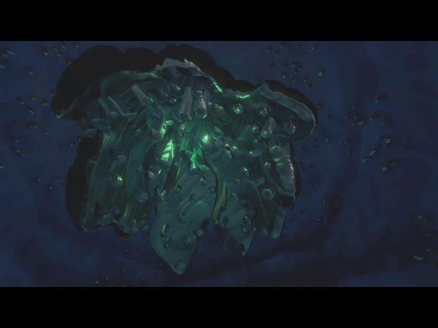

O Xereta (Interloper) é um pequeno cometa de gelo que viaja pelo sistema solar de Outer Wilds.
O cometa foi o responsável por trazer a matéria fantasma para o sistema, dado que seu núcleo é repleto do material. A matéria fantasma é nociva para animais. Quando chegou ao sistema solar, a matéria fantasma de dentro do Xereta saiu quando o sol derreteu parte de sua crosta, matando os Nomai. Na época, não matou os lenhosos, já que eram aquáticos na época (a matéria fantasma não funciona na água, como é possível perceber em uma ilha no Profundezas do Gigante). Atualmente, boa parte do material se esvaiu do sistema.
